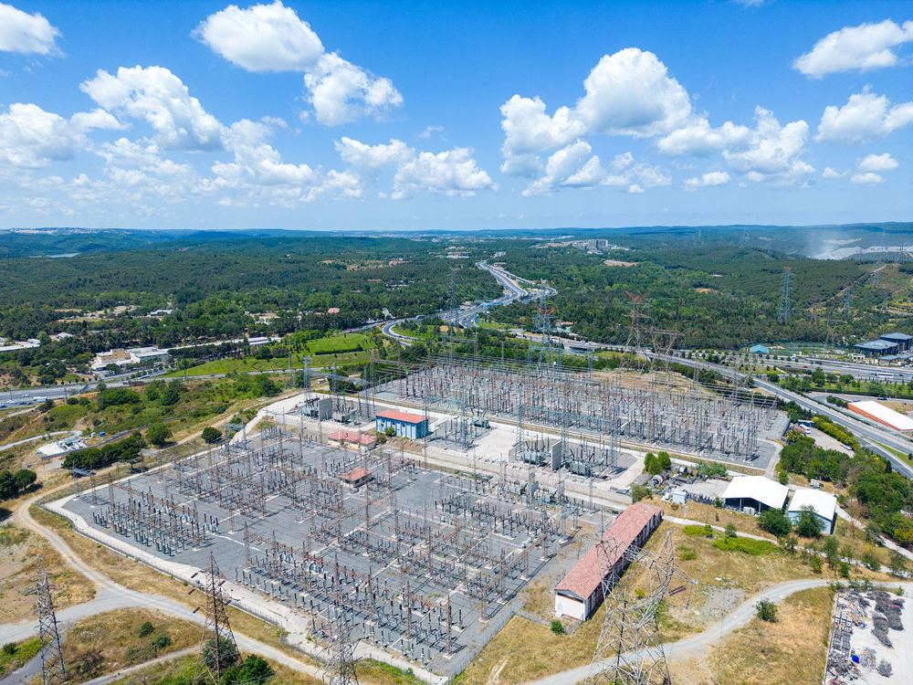
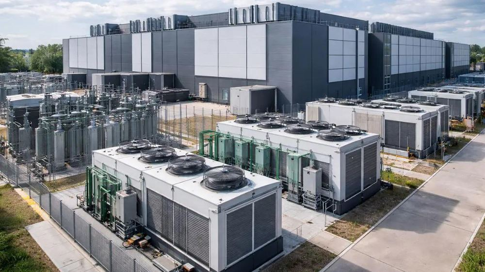
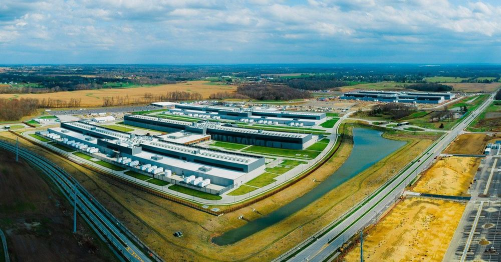

Coordination
Route workloads across regions, facilities, and thermal zones based on real-time infrastructure constraints.
The coordination layer for AI infrastructure.
As AI workloads move across GPU clusters, power markets, cooling limits, and regional grids, Helicyn helps operators decide where and when work should run, reducing waste without sacrificing utilization.
Training, inference, cooling, power, and grid conditions now move on different clocks. A cluster may have spare GPUs but no cooling headroom. A region may have cheap power but high carbon intensity. Helicyn coordinates eight layers together instead of optimizing each in isolation. Select a layer to see what it contributes.
Training, inference, and batch jobs enter with priority, SLA flexibility, and deadline constraints already attached. This is where a coordination decision starts.
Every coordination decision starts with the same simulated telemetry, read together instead of by separate teams on separate dashboards.
Six steps turn an observed constraint into an operator-approved, verified outcome.
AI data centers are becoming constrained by more than chips.
The bottleneck is no longer silicon. It is coordination between compute demand, power availability, cooling capacity, grid conditions, and the physical plant itself.
Today each of these is run as a separate layer, by separate teams, on separate clocks.
Our thesis is that the next generation of AI infrastructure software will not optimize one layer in isolation. It will coordinate compute, energy, cooling, and physical constraints as one system.
We start with energy and thermal optimization for AI data centers. The direction is an operating layer for large-scale computational and physical infrastructure.



Route workloads across regions, facilities, and thermal zones based on real-time infrastructure constraints.
Balance GPU utilization, energy cost, carbon intensity, cooling load, and PUE without treating them as separate problems.
Surface recommended actions, confidence levels, and projected impact with verification before changes are approved.
Designed for distributed AI infrastructure, not isolated server rooms: multiple regions, multiple grids, multiple workloads, one coordination layer.
Local optimization still matters. Helicyn simply treats it as one layer inside a larger coordination problem.
The Control Plane shows the hierarchy of decisions: first route or defer work, then rebalance regional load, then adjust facility-level cooling and power settings, then verify the result.
Shift 18% of flexible training from US-WEST to US-CENTRAL during peak grid load.
Helicyn is currently a research-backed simulation and interface prototype. The control plane demonstrates the coordination logic behind workload placement, thermal-aware scheduling, cooling impact, and operator approval.
The next step is validating these methods against published research, synthetic fleet simulation, and technical review.
Helicyn is currently pre-commercial. Founding partners receive early access, direct product input, priority onboarding, and preferred launch pricing when the platform launches.
Pre-commercial. Relationship-first: product feedback, design partnership, and early validation. Not a paid production product yet.
Proposed annual enterprise SaaS/platform subscription once the platform is production-ready, coordinating workloads, energy, cooling, and infrastructure.
Once savings are verified, the customer keeps most of the savings and Helicyn receives an agreed percentage.
Leave an email if you want to review the thesis, test the simulation, or discuss infrastructure coordination before applying. Conversations are private. To formally apply as a founding partner, use the onboarding form instead (requires an account, sign in at /login).
The full Helicyn thesis is currently being written. A preliminary version is expected in late July.